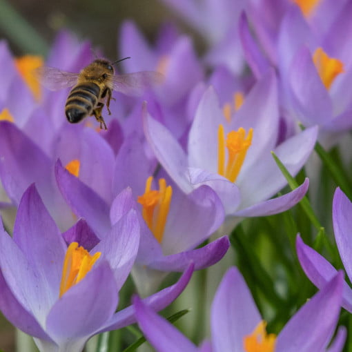
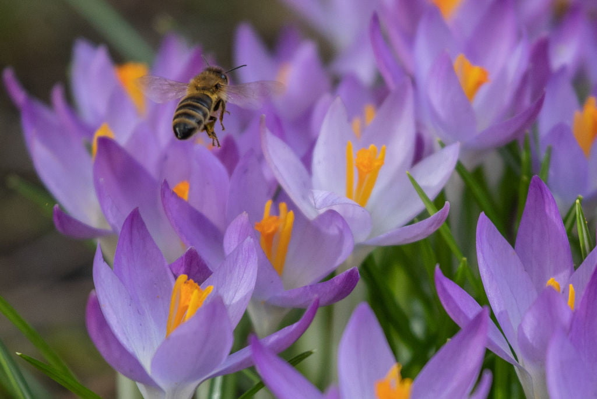

El polen aumenta el riesgo de contagio de COVID-19
Una elevada concentración de polen en el aire aumenta el riesgo de contraer COVID-19, según revela un estudio coordinado por investigadores en Alemania.
La investigación, publicada por científicos de la Universidad Técnica de Múnich en la revista científica
Proceedings of the National Academy of Sciences , revela que el riesgo de infección por COVID-19 aumenta a razón de 4 por ciento por cada aumento de 100 granos de polen en el aire por metro cúbico.
Los investigadores explican que cuando un virus entra al cuerpo humano, el sistema inmunológico emite unas proteínas conocidas como interferones, que aumentan las defensas y generan una respuesta inflamatoria benéfica.
Los expertos puntualizan que si las concentraciones de polen son elevadas y los granos se inhalan junto a las partículas del coronavirus, se generan menos interferones.
'La respuesta inflamatoria benéfica queda igualmente afectada.Por lo tanto, en días con elevadas concentraciones de polen, puede conducir a un incremento del número de afecciones respiratorias', señalaron los investigadores.
Estas conclusiones se obtuvieron tras revisar datos sobre la emisión de polen en 130 estaciones de 31 países de los cinco continentes.Los científicos de la Universidad Técnica de Múnich encontraron que en algunas ciudades, donde la concentración de polen llegó hasta los 500 granos por metro cúbico, la tasa de infección se elevó más de 20 por ciento.
El polen es un grano diminuto que emiten las flores para transportar las células sexuales masculinas de las plantas.Típicamente, este polvo se despide en la temporada primaveral, por lo que los científicos de la Universidad Técnica de Múnich alertaron sobre el riesgo que representa ante el contagio de COVID-19.
Los expertos señalaron que para evitar un mayor riesgo de contagio, basta utilizar una mascarilla.
'Usar una máscara de filtrado de partículas cuando las concentraciones de polen son altas puede mantener tanto el virus como el polen fuera de las vías respiratorias', destacaron los investigadores.
Posted On: 2021-03-09T00:00:00
Posted By: Allan Vélez


Content Date: 2021-03-09
Download Date: 2021-04-08
Document ID: L0C049FGH